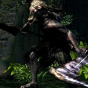
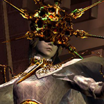

DARK SOULS (2011)
Опциональные боссы |
|||
| Демон Телец | Демон Капра | Разверстый дракон | Лунная бабочка |
| Бродячий демон | Неутомимый воин | Мудрый демон Огня | Демон-стоног |
| Гвиндолин Темное Солнце | Присцилла Полукровка | ||
Боссы в DLS Artorias of the Abyss |
|||
| Страж святилища | Арториас Путник Бездны | Манус Отец Бездны | Черный дракон Каламит |


 Горгулья
Горгулья Квилег Ведьма Хаоса
Квилег Ведьма Хаоса Сиф Великий Волк
Сиф Великий Волк Железный голем
Железный голем Орнштейн и Смоуг
Орнштейн и Смоуг Ложе Хаоса
Ложе Хаоса Четыре Короля
Четыре Короля Гвин Повелитель Пепла
Гвин Повелитель Пепла